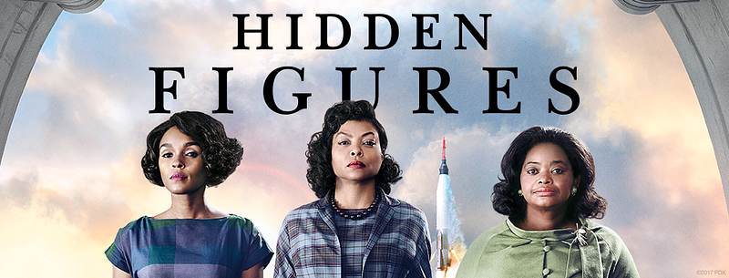
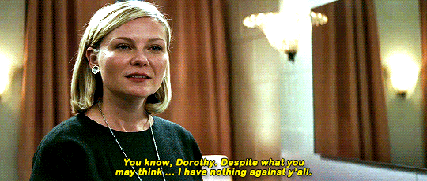
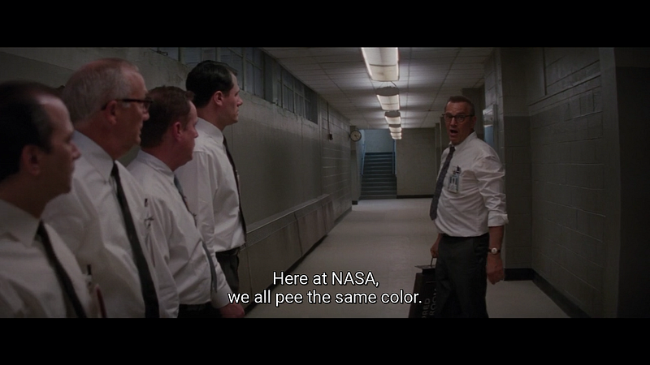
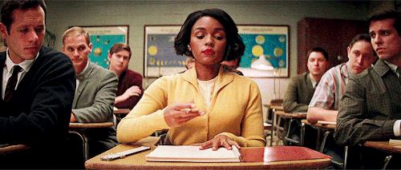

Hidden Figuresからイベントにおける多様性について
Hidden Figuresからイベントにおける多様性について

今更だけど、先日 Hidden Figures （邦題：「ドリーム」）を観てきた。
基本事実に基づいた作品なので大ドン返しとかはないけど、よくまとまっていて面白い話だった、という他に、世の中の多様性のあり方と技術の女神に仕える一人の人間として心打たれるものがある作品だった。
そして、この話を見て、間接的にだけどここ1〜2年考えていた、自分のやっている技術イベントにおける多様性について考える機会があったのでそれについて書き出してみる。
偶然、少し前に来年開催予定のbuilderscon tokyo 2018における参加者の多様性について軽く議論する機会があった。
builderscon tokyo 2018 | Sep 6-8, 2018 / at Kyouseikan, Keio University. | 知らなかった、を聞く - buildersconは技術を愛する全てのギーク達のお祭りで…2018.tokyo.builderscon.io
考えをまとめていなかったのと軽く酒が入ってたのもあって、そのときは自分の好き嫌いの話に終始してしまって大変後悔していた。
「違う違う、もっとなんか言い方があったはずだ…」
と、その晩寝る間際まで考えていた。
そして今回差別と戦う話を見て、自分の知ってるアメリカについて妻に語る中で、そのあたりのことについてある程度言語化することができた。
なお、現時点では本エントリはあくまで、個人的な意見で、自分の関わってるイベントの総意ということではありません。
Hidden Figuresにおける黒人および女性差別の表現
映画を見てない人のために軽くあらすじを。
主人公のキャサリン、メアリー、ドロシーはそれぞれ数学の天才、有能な宇宙航空エンジニア（に後になる）、有能なコンピュータプログラマー（に後になる）、という才能を持つのに、女性であるという点、そしてそれ以上に分離政策下における黒人である、という点からの偏見と差別と戦いながら米国のマーキュリー計画に携わっていく、という話だ。
実際のNASAでの環境とは色々違う点もあるらしいが（詳細はWikipediaやその他サイトでどうぞ）、描かれている差別は教科書に載っているような（言い方は悪いが）標準的な差別だ。
トイレを含む公共施設の分離、バス等の座る席の分離、就ける職種の制限… これが20世紀の超大国で1960年代まで本当にあった話なのだ。
（日本ではあまり大きくとりあげられることはないと思うけれども、個人的には作中でもちらっと登場する「ブラウン対教育委員会裁判」や、南北戦争後どれだけの長い時間がかかって公民権法の制定までたどりついたか、そして分離政策等が公式に無くなったのに依然として残る差別という現実についての話は近代に生きる人間として知識としては知っていて欲しいとおもう）
途中、立場上ドロシーの昇進を阻む知らせを常に持ってくるKristen Dunstが演じるキャラクターが、頭角をあらわしはじめたドロシーに対して「あなたたちはそう思わないかもしれないけど、私は別にあなたたちについて悪く思っているなんてことはないのよ」と伝える。

これに対してドロシーは
「分かっていますよ。あなたがそれが真実だと思っている事は分かっています」
と答える。
ここでこの映画の中で我々日本に住む人間にとっても共通な事項が見えてくる。マジョリティにとっての何気ない行動はそれが当たり前なので、その行動がどれだけ不当な差別であるという事実が見えない。このやりとりはそれを実にわかりやすく描いていると思う。
映画の主人公の彼女達は才能をもっているのに、黒人であり女性であるという点からプロジェクトへの参加が困難になっている。そんな映画だった。
buildersconスタッフキックオフでの話
さて、話を戻すと、先日、自分は「女性のスピーカをもっと入れたい」という旨の発言をした。
これにに対して「基本賛成だが、我々の業界には女性の絶対数が少ない。女性であるという点だけで優先度をあげたりしたら、場合によっては他の良いスピーカを不採用にする可能性はないか？」という運用の面からの意見をもらった。
前述の通り、ちゃんと考えを準備していなかったのと、酒も入っていた状態でそれに答えようと色々話しててグダグダになった。
その話の流れでいくつか印象的な問いかけがあったので、それについて書いていきたい
「女性の権利推進とかしてるの？」
まず自分の立場について。
自分は才能の前には人種・性別は関係ないと思っている。が、正直に言えば同時に女性の権利を自ら積極的にどうこうしようと言う思想はもってない。
ただ、みんな幸せになれればいいのにとは思う。なので、選挙で選択する必要があれば、平等権利方向に倒す。同性間の結婚も普通に認められればいいのに、ともおもう。そういう議題について投票の機会があれば賛成票を投じるだろう。
でもだからといって、イベント等でいわゆる社会正義の戦士的な事をしようとは思ってない。その程度の弱腰リベラルである。
ただ、アクティブな活動をしていなくとも、自分の事で認識しておくべき事実はあると思っている。
自分は男性であること。
教育を充分に受けられる経済力のある家庭で育ったこと。
（それ以外にも色々あるだろうけど、ここではとりあえずこんなもんで）
つまり自分は、ザ・マジョリティであり、「持つ者と持たない者」の二元論の中では持つ者である事だ。
このような立場の人間が「自分が大丈夫だから」と考えるのは危険であるというのは意識してるべきだと思ってる。
「技術イベントに多様性は必要なのか？」
僕の答えとしては「そこから何か新しい物を生みだそう・得ようとする技術カンファレンスなら必要」となる。
ただの飲み会なら必要ない。
近しい価値観の人同士が集まってワイワイやる飲み会的な集まりは否定しないし、良いことだと思う。人間誰しも共感を得たいし、そういう集まりも懇親という観点からはなんの問題もないだろう。
けれども、＊自分＊がカンファレンスをやる理由のひとつは、そこに集まった人達から自分が作れない何かが生まれるところをみたい、というものなのだ。自分は同じような人が集まっても同じような何かしか生まれないと考えていて、新しい価値を見いだすには異質な才能が結合ないし反発する必要があると思ってる。
この一点において、多様性は必要不可欠だと思っている。
はなはだ利己的な理由だと自覚はしてるが、自分が多様性を求めるのは実利を追っているからなのです。
「わざわざ母数が少ないところにフォーカスする必要はあるのか？」
ある。だが、理由は「女性（を含むマイノリティ）が登壇する必要があるから」、という原則があるからではない。
ではマイノリティを能動的に求める理由はなにかというと、多様性を求めていると言う事実を全体に伝える必要があるからだ。
自分はその人が女性だろうとゲイだろうと、技術のおもしろい話を聞かせてくれるなら聞きたい。
しかし我々が何も考えずに行動していては、カンファレンスは常にマジョリティが運営するマジョリティのためのカンファレンスになってしまう（なお、この場合のマジョリティは母数集団が多いというだけでなく、例えばそのコミュニティで声の大きい、有名な人、というのも入る、と適時読み替えて欲しい）。
そんなマジョリティがマジョリティのために運営してるイベントに好きこのんで参加するマイノリティはいるのだろうか？いるにしてもかなり可能性が低くなるだろう。マイノリティを含めた全ての人間からの参加を運営するイベントに求めるならば、マジョリティに属している我々が何か特別なアクションを起こす義務があるのではないか。
そういう意味で、マジョリティである我々が行動を見せるしかない、というのが自分の意見だ。
去年のbuildersconでは全体としてはやはり女性のスピーカは圧倒的に少なかったものの、ありがたい事にこちらがわざわざ何かするする必要もなく、たまたまゲストスピーカ4人のうち、2人が女性であった。
Discover Something New - builderscon is a festival for those who love tech!builderscon.io
Discover Something New - builderscon is a festival for those who love tech!builderscon.io
しかし毎年そういう幸運が訪れるとは限らない。なお、敢えて言うが、2人とも登壇して欲しい人物像から探していたら実際に出会えた、というだけで、別に彼らが男性だろうが女性だろうが、何人であろうが登壇を依頼していたことは変わりない。
大分まわりくどかったが、前述の「多様性を求める」ためには、「多様な参加者がいる」という事実を作る必要があると考えている。
そして、そのための選択肢のひとつとして、「可能な限り男性ばかりのプログラムにならないように女性スピーカを積極的に探す」というものがあると思っている。（なお全部いっぺんにできる自信はないので、他のマイノリティについてはまだ今後の話と考えている）
ただし、最終的にはバランスの問題なので、実際にはどうやったってマジョリティにある程度バランスは傾いてしまう。しかし、だからこそ多様性を求める限り、マジョリティに属しないグループの能動的な採用は意識的にやるべき施策なのだと思う。だから元の疑問への答えは「必要ある」だ。
Hidden Figuresで主人公のキャサリンが使える有色人種用トイレが施設にない、という場面から「我々は全員ロケットを宇宙に届ける仕事をしている」というメッセージを届けるために施設内の「有色人種用トイレ」を無くす長官が語るシーンがある。
この話の帰結点はまずひとつに我々は全員技術の女神に仕える人間であること、そして自分達、マジョリティ以外にさらにすごい人間がゴロゴロいるはずであり、技術についての観点以外ですごい技術の話を持っている人間を見逃すことは技術の女神への冒涜である、というところだ。

なお、ガッカリ感があるかもしれないが、調べたところ史実ではNASAでこの時代に有色人種用と白人用のトイレが分離されていた事実はないらしい。物語的には「な〜んだ」だが、それ自体は現実のほうがよかったわけだ。
追記：ブコメを見てもう一度読み返したら、自分は最初の”Not Exactly”しか読んでなかった事に気づいたので、自分が読んだサイトから引用
from: http://www.historyvshollywood.com/reelfaces/hidden-figures/
Did Katherine have to run across the NASA Langley campus to use the bathroom?
Not exactly. In Margot Lee Shetterly’s book, this is something that is experienced more by Mary Jackson (portrayed by Janelle Monáe) than Katherine Johnson. Mary went to work on a project on NASA Langley’s East Side alongside several white computers. She was not familiar with those buildings and when she asked a group of white women where the bathroom was, they giggled at her and offered no help. The closest bathroom was for whites. Humiliated and angry, Mary set off on a time-consuming search for a colored bathroom. Unlike in the movie, there were colored bathrooms on the East Side but not in every building. The sprint across the campus in the movie might be somewhat of an exaggeration, but finding a bathroom was indeed a point of frustration.
As for Katherine Johnson herself, Shetterly writes that when Katherine started working there, she didn’t even realize that the bathrooms at Langley were segregated. This is because the bathrooms for white employees were unmarked and there weren’t many colored bathrooms to be seen. It took a couple years before she was confronted with her mistake, but she simply ignored the comment and continued to use the white restrooms. No one brought it up again and she refused to enter the colored bathrooms.
余談：好きだったシーン
航空宇宙エンジニア職を目指すメアリーはその異動願いを「資格が足りない」という理由で一旦却下される。その条件は後付けであり、しかも「白人専用」の学校に通わないとかなわないものだった。
彼女はそこから裁判所に訴え、裁判官に入学の許可を得るためにスピーチをおこなう。彼女は下調べをしており、裁判官が彼の家族で初めて軍学校から主席で卒業した人であること、初めて3人の知事に継続を認められた裁判官である旨（注：うろ覚えなので、細かいところが違ってたらすみません）を再確認したあと、こう言う：
「私はNASAで宇宙航空エンジニアになるつもりですが、そのためには白人専用の学校に入学する必要があります。肌の色を変えることはできませんから、私もあなたにならって『初めて』になる以外ないのです。」
「そのためにはあなたの助けが必要です。裁判官、本日聴かれる予定の案件の中で、100年後にまだ覚えてもらえる案件はどれだと思いますか？どの案件があなたを 『初めて』にしてくれると思いますか？」
そして、夜間学校のみ、という条件付きながら、メアリーは『初めて』になるのだ。

自分は技術の世界に生きる人間の一人として、メアリーと裁判官、両方の気概を持って精進していきたい、と感じた。技術の世界でも、初めてになることを恐れず飛び込んで行きたいし、障壁があればそれを破壊して進んでいきたい。
普段の仕事で常に最先端でいろ、という話ではなく、可能な限り、ということでもちろんいいと思う。全員が英雄である必要はないけれど、気概の問題として、そうありたいと感じた。
Hidden Figuresはいい話だった。少なくとも肌の色による差別は存在しない分、日本の技術者は自分の環境の良さを実感して頑張るという気持ちにしてくれる… といいな、と思う。そしてやはり、自分の関わるカンファレンスでは世代、性別、人種等を意識して、常に多様性を求めていきたい、と感じたのであった。
なお、builderscon tokyo 2018は来年9月6日から9月8日にかけて開催予定です。トーク応募開始は来年春頃！